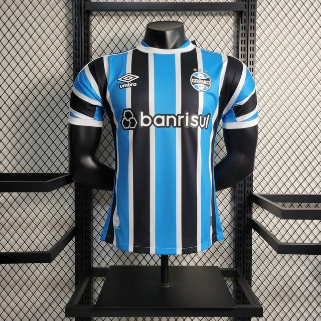
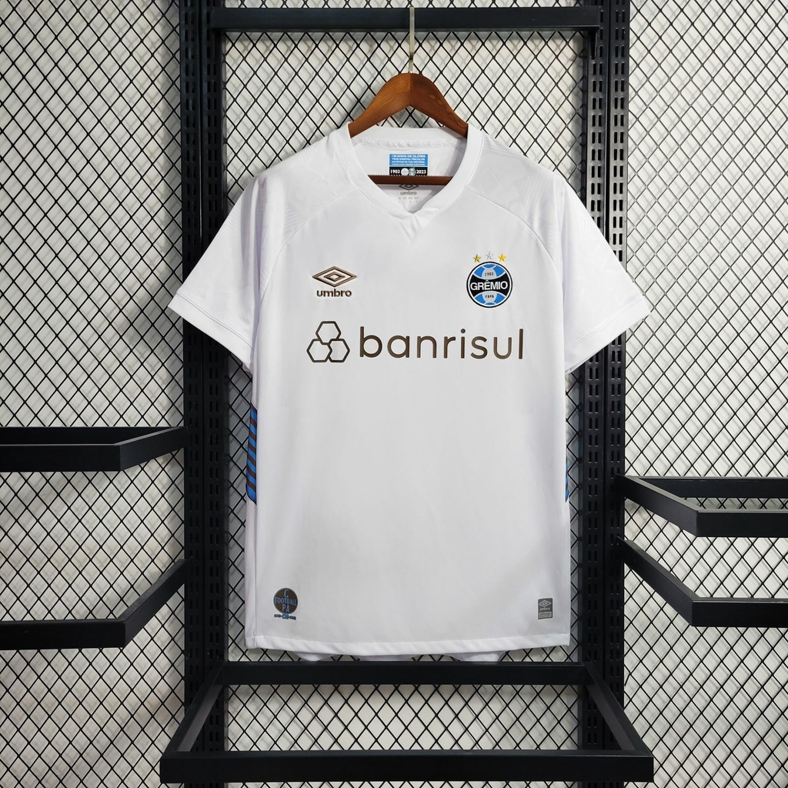

História do Grêmio: títulos, ídolos e jogos
O Grêmio Foot-Ball Porto Alegrense foi fundado em 15 de setembro de 1903, em um restaurante da região central de Porto Alegre. A equipe venceu o primeiro campeonato que disputou, a Taça Wanderpreiss, em 1905 - que voltaria a ganhar em outras sete oportunidades. O Grêmio é, junto ao Cruzeiro, o maior campeão da história da Copa do Brasil (quatro taças). O ano de 1983 foi um dos mais marcantes da história da equipe, com as conquistas da Copa Libertadores e do Mundial, com o então atacante Renato Gaúcho tendo marcado os gols da vitória diante do Hamburgo, da Alemanha. Em 2005, no título da Série B, o time teve jogo histórico contra o Náutico, a "Batalha dos Aflitos".
Nome: Grêmio Foot-Ball Porto Alegrense
Alcunhas: Tricolor, Imortal, Tricolor dos Pampas
Fundação: 15 de setembro de 1903
Localização: Porto Alegre - RS, Brasil
Estádio: Olímpico
Capacidade: 45.000
Presidente: Paulo Odone
Uniformes
|
Titular 1° uniforme : |
 |
|
Reserva 2° uniforme : |

|
Arena Do Grêmio
O Estádio Olímpico Monumental foi fundado em 19 de setembro de 1954. O Grêmio afirma que o local tem capacidade para 55 mil espectadores, enquanto a CBF indica público máximo de 45 mil. O recorde de presentes ocorreu em 26 de abril de 1981, quando 98. 421 pessoas assistiram à derrota gremista para a Ponte Preta, por 1 a 0. Atualmente, o Grêmio colocou em ação o projeto para a construção de um novo estádio. A Arena do Grêmio será levantada até 2012, no bairro Humaitá, em Porto Alegre. A previsão é que o local possa receber 52.398 torcedores.
mais sobre o estádio do grêmio
Títulos
Titulos taça Mundial 1 título 1983 taça Copa Libertadores da América 2 títulos 1983 e 1995 taça Campeonato Brasileiro 2 títulos 1981 e 1996 taça Copa do Brasil 4 títulos 1989, 1994, 1997 e 2001 taça Campeonato Brasileiro - Série B 1 título 2005 taça Recopa Sul-Americana 1 título 1996 taça Copa Sul 1 título 1999 taça Campeonato Gaúcho 36 títulos 1921, 1922, 1926, 1931, 1932, 1946, 1949 1956, 1957, 1958, 1959, 1960, 1962, 1963 1964, 1965, 1966, 1967, 1968, 1977, 1979 1980, 1985, 1986, 1987, 1988, 1989, 1990 1993, 1995, 1996, 1999, 2001, 2006, 2007 e 2010